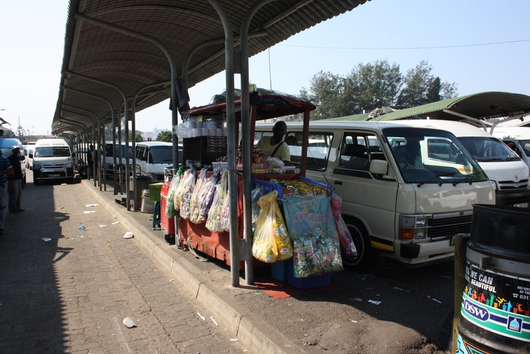
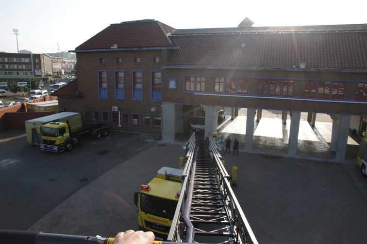
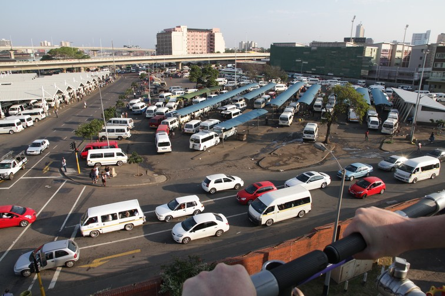
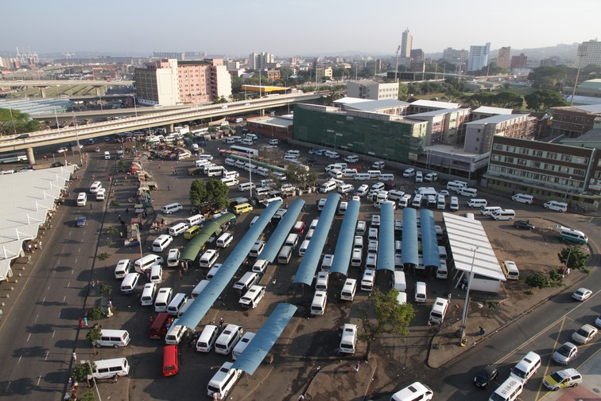

To get a better idea of what public transport looks like in the Durban CBD, we decided to visit the Inanda Taxi Rank, situated in Durban’s CBD. The local fire station offered to give us an overview by climbing up their 40m ladder.

Inanda Taxi Rank: Inanda Taxi Rank started out next to the bus rank but was then moved across the street after the municipality made space for the numerous taxis ferrying people from the CBD to areas like KwaMashu, Lindelani, Siyanda, South Gate and Mt Moriah. eThekwini Municipality has had to make a lot of space for taxis over the years. In the Durban CBD alone there are now 56 demarcated taxi ranks and 2,604 bays in total.
Fire truck: To get a better overview, the Durban Fire Station offered to take us 40m up into the air with this fire truck.

Ladder extension: We climbed into a basket on the end of this extension ladder.

Going up: I didn’t let go of the rail while taking these photos so couldn’t alter the zoom. I kept my eye in the viewfinder and the view just got further and further away.

Going up and up: This is not a drone!
It’s swaying at 40m up: There you can see the white roof of the Inanda Bus station next to the blue roofs of the taxi rank. “We’re done now, let’s go back down!”